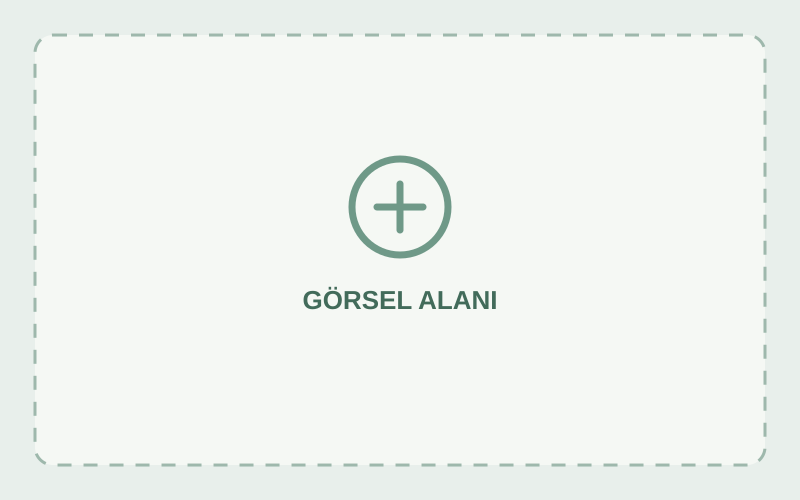

PROJE ADI
ULAŞIM SERGİ SALONU
Kurum / ekip adı
Projeleri düzenle
Sunumu başlat ↗
Sunumdan çık
PROJE KOLEKSİYONU
Başlık
ve alt başlık.
10 proje. Tek bir sergi.
İçeriğinizi bu alanlara ekleyin.
Sergiyi keşfet
→
Temsilî sergi mimarisi · Proje görsellerinizi ekleyin
Görseli tam ekranda incele ↗
⌂
←
→
⛶
Sürükle: etrafa bak · W/A/S/D: yürü · ← →: proje · Home: giriş
01—10
PROJE GALERİSİ
Kapat ×
←
→